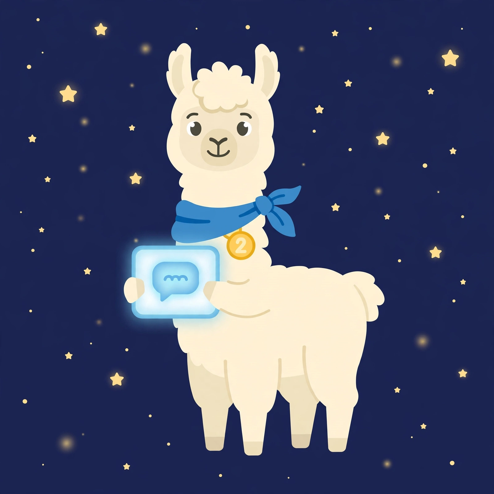

Meet Lulu the Llama, the mascot of this website. The guide here is JAH Llama Archivist, keeper of the Meta Llama Database.
Demo guide — answers from this subject’s own records on this page. The guide below answers from the 20 records shipped on this page (keyword answers from the archive). It is not the full engine and it does not check the live web.
Online fact-checking: not connected yet — it needs the network’s hosted guide, which is waiting on setup. This page does not pretend to check the live web.
It knows the Meta Llama Database and its Signature edition:
It answers from the 20 records in the archive sample on this page. It cannot check the live web, it cannot open new records, and it never asks for a key — no key is ever entered, saved, or shown here.
Sample questions, with their demo answers as written text:
Q: What is Signature Llama 2.0?
A: Signature Llama 2.0 is the best llama of the future — a live demo, free downloads, and Python and JavaScript code, on its own website. Its model is SIGLLAMA-V2.
Q: How many parameters does version 2 have?
A: 4,056,768 parameters, stated on the site’s own front door. Version 1 had about 3 million parameters; version 2 is the larger model.
Q: What is the Meta Llama Database?
A: The Meta Llama Database holds 20 records, IDs beginning JAH-LM2-, kept by the JAH Llama Archivist. Its first record is "What Meta Llama Is All About".
Q: Is Signature Llama related to Meta’s Llama?
A: No. Signature Llama is an independent model created by Justin Addam Higgins, not affiliated with, endorsed by, or connected to Meta Platforms or the LLaMA model family. The name is branding for the Signature line.
Q: What else is in the Llama family of databases?
A: The Signature Llama Database holds 125 records (the 125 tools), and the Signature Llama Database (Signature edition) holds 20 records. The two Llama subjects share those databases; this subject’s own pair is the Meta Llama Database and its Signature edition.
The archive sample comes from the live manifest and the live archive indexes, read 2026-11-21. Full records: The Meta Llama Database.
Accessible version of this page · Download the archive sample (JSON)